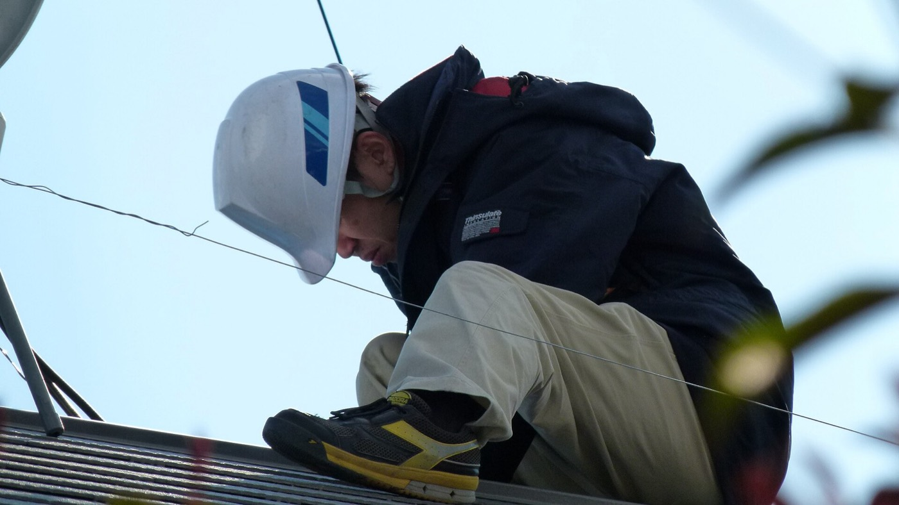
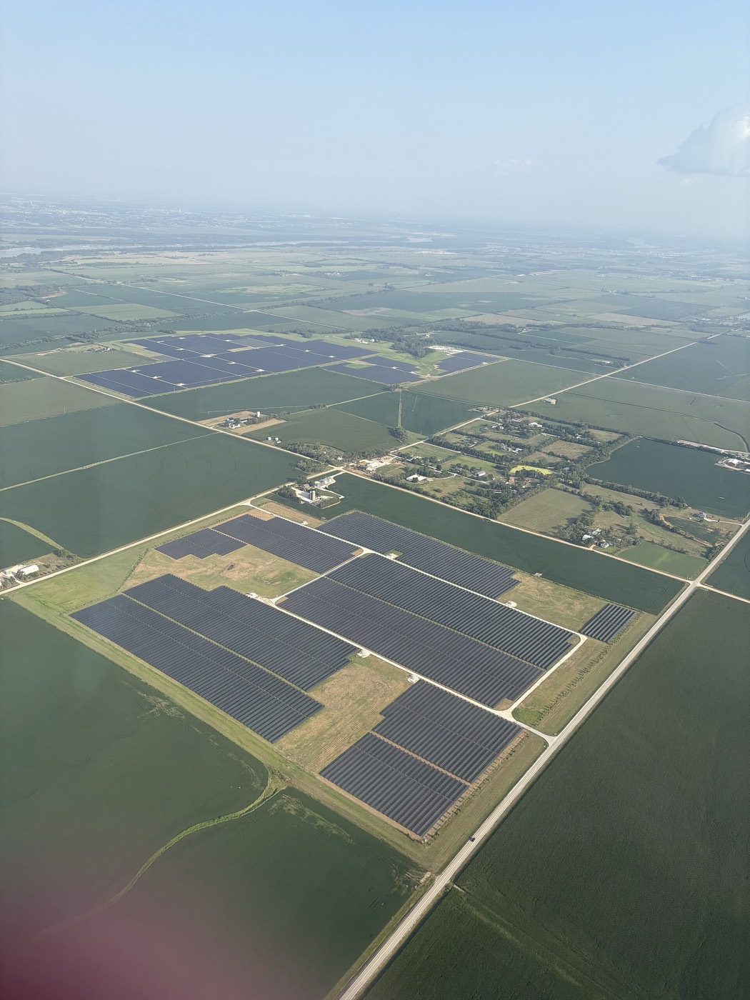
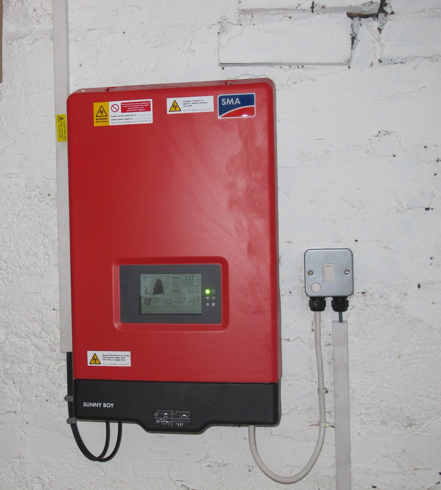

Autoconsumo fotovoltaico industrial
La cubierta de su nave ya está pagada. Lo que produce, no.
Ingeniería, obra y mantenimiento de plantas de autoconsumo para industria y logística. Estudiamos su curva de consumo real antes de proponer una sola placa.

En cifras
Valores de referencia para latitud próxima a 40° N con inclinación óptima. Su cubierta dará otra cosa: por eso hacemos un estudio antes de presupuestar.
Servicios
Estudio y diseño
Analizamos su curva horaria real de consumo, medimos la cubierta y calculamos qué potencia le conviene. Ni una placa de más.
Ejecución
Obra llave en mano con nuestro propio equipo. Trabajamos en parada programada o fuera de turno: la planta no se detiene.
Explotación
Monitorización remota, limpieza programada y garantía de rendimiento con penalización si no se cumple.
Servicios
Tres fases, un solo interlocutor.
No subcontratamos la ingeniería ni la obra. Quien firma el estudio es quien responde de la producción cinco años después.
Estudio y diseño
Partimos de su curva horaria, no de su factura anual. La diferencia importa: dos plantas con el mismo consumo total pueden necesitar potencias muy distintas según a qué hora consuman.
- Lectura de la curva horaria del contador (15 minutos)
- Levantamiento de cubierta y estudio de sombras
- Cálculo estructural y comprobación de sobrecarga
- Dimensionado por rentabilidad, no por superficie disponible
Ejecución
Obra llave en mano con equipo propio y plazo cerrado en contrato. La coordinación de seguridad y salud y la legalización van incluidas.
- Estructura, módulos, inversores y protecciones
- Legalización y tramitación completa ante distribuidora
- Trabajo en parada programada o fuera de turno
- Penalización por día de retraso, escrita en contrato
- No cobramos ampliaciones que no estuvieran en el proyecto
Explotación
Una planta sin mantenimiento pierde entre un 3 % y un 7 % de producción al año por suciedad y microfallos que nadie ve desde el suelo.
- Monitorización remota con alarma por bajo rendimiento
- Limpieza programada según la época y el entorno
- Termografía anual para detectar células calientes
- Garantía de producción con compensación si no se alcanza
Proceso
De la primera visita a la primera factura más baja.
Seis pasos. Los tres primeros no le cuestan nada y puede pararlos en cualquier momento.
Los plazos son los habituales en instalaciones de entre 100 y 500 kWp. La tramitación con la distribuidora es la parte menos previsible y la única que no depende de nosotros.
Rendimiento
La orientación decide más de lo que parece.
Sur produce más al año. Este-oeste produce menos, pero reparte mejor a lo largo del día, y en una fábrica que consume de ocho a seis eso puede valer más.
Ver los datos en tabla
Estimación para latitud próxima a 40° N, inclinación óptima y sin sombras. Producción específica anual de referencia: 1.623 kWh/kWp en orientación sur. Su cubierta dará otro número, y por eso el estudio se hace con datos suyos y no con estos.
Amortización
Cuándo deja de ser un gasto y empieza a ser un ingreso.
Mueva la potencia instalada y verá cómo cambia el año en que la instalación se paga sola. Es una estimación, no una oferta.
Modelo simplificado y orientativo. Supone 1.000 €/kWp instalados, 1.623 kWh/kWp al año, precio de la electricidad evitada de 0,13 €/kWh, excedentes compensados a 0,05 €/kWh, degradación del panel del 0,5 % anual y 12 €/kWp al año de explotación. No incluye subvenciones ni deducciones fiscales, que suelen acortar el plazo. No es una oferta: la cifra real sale del estudio.
Proyectos
Tres tipos de cubierta, tres problemas distintos.
Ejemplos representativos del tipo de encargo que hacemos. Los datos son de proyecto, no de cliente identificable.

Fichas de ejemplo con cifras de proyecto redondeadas. Sustituibles por casos reales y fotografía de obra cuando el cliente autorice publicarlos.
Mantenimiento
Lo que se deja de ganar cuando nadie mira los datos.
Una planta parada un mes en verano se lleva por delante buena parte del beneficio del año. Y casi nunca se para del todo: se degrada sin que nadie lo note.

Los dos contratos
Los porcentajes de pérdida son rangos habituales del sector, no una medición de su planta. Lo que sí es firme es la garantía de producción: si la instalación no alcanza lo comprometido, se compensa.
Empresa
Ingenieros que además montan.
Somos una empresa pequeña de ingeniería e instalación. No vendemos placas: vendemos que su factura baje y siga baja.
Créditos de las imágenes
Fotografías de Wikimedia Commons con licencia libre, atribuidas a su autor. Se sustituirían por fotografía propia de obra en un encargo real.
Preguntas
Lo que nos preguntan antes de firmar.
Contacto
Mándenos una factura y le decimos si le sale a cuenta.
El primer estudio no se cobra. Si no sale rentable, se lo decimos y ahí acaba.
Simulador
Con sus números, no con los nuestros.
Cuatro datos que salen de su factura y de una foto de la cubierta. En diez segundos sabe si esto le interesa o no.
La superficie útil es la que queda libre de lucernarios, chimeneas y pasillos: suele ser el 60–70 % de la cubierta total. Se calcula con 6 m² por kWp instalado.
Equipos
Lo que montamos, y por qué esto y no lo otro.
Pulse una columna para ordenar. Es la misma tabla que usamos nosotros para decidir, sin la columna del margen.
Precios orientativos por unidad y sin instalar, a fecha de la maqueta. La garantía de producto es la del fabricante; la de producción, la que cubre que el módulo siga dando un mínimo a los veinticinco años.
La obra
Qué pasa cada semana, y qué depende de qué.
Las tareas marcadas están en la ruta crítica: si una se retrasa un día, la obra entera se retrasa un día. Las demás tienen holgura.
Duraciones típicas, no un compromiso contractual. La tramitación con la distribuidora es la única tarea cuyo plazo no depende de nosotros, y por eso arranca la primera.
Glosario
Las palabras que le van a decir en las ofertas.
Escriba y va filtrando. Si alguien le vende algo que no sabe explicar con estas palabras, desconfíe.
Ningún término coincide. Pruebe con otra palabra.
Antes de la visita
Ocho cosas y le ahorramos una semana.
Se marca lo que ya tenga; queda guardado en este navegador. No se envía a ningún sitio.
Ficha
Una hoja para llevar a la reunión.
Recoge lo que ha salido del simulador. Se imprime en un folio y cabe en un archivador.